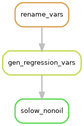
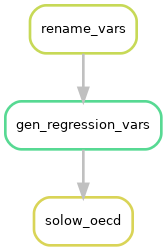
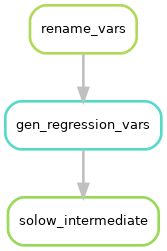
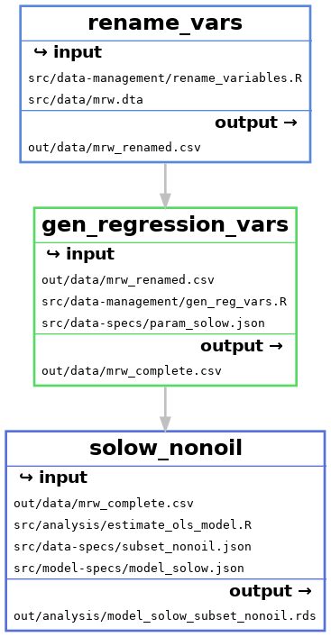
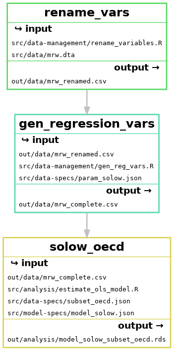
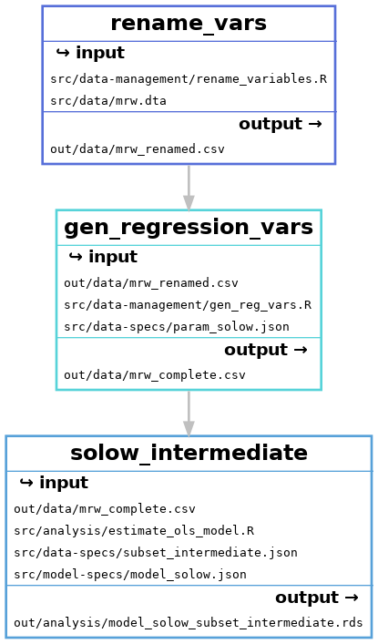

Chapter 4 Working With Multiple Rules
Overview
Questions
- How does Snakemake link rules together?
- How does Snakemake know in which order to execute rules?
- How can we delete project output and build our project from scratch?
Objectives
- Explain how Snakemake rules depend on each other
- Practice writing Snakemake rules
- Explain what a
cleanrule is and why we use use them
Snakefile Status
At the end of the previous Chapter, our Snakefile has the following contents:
rule rename_vars:
input:
script = "src/data-management/rename_variables.R",
data = "src/data/mrw.dta"
output:
data = "out/data/mrw_renamed.csv"
shell:
"Rscript {input.script} \
--data {input.data} \
--out {output.data}"At the beginning of each chapter, we will have a copy of the Snakefile contents of the previous chapter.
This will be our starting point.
In the last chapter we learned how to write and execute a single Snakemake rule. Real world research workflow typically have more than one step, and require many scripts to be executed sequentially. Next, we will learn how to work with several rules and understand how rules interact with each other.
4.1 Creating a Second Rule
The second step in our data management is to create additional variables we will use in our regression analysis.
The script gen_reg_vars.R in the src/data-management folder does this for us.
We are going to build a rule called gen_regression_vars to run this script using Snakemake.
To investigate what the inputs and outputs might be in this new rule, let’s look at the help output from the gen_reg_vars.R script:
The following is returned to screen:
Options:
-d CHARACTER, --data=CHARACTER
a csv file name
-p NUMERIC, --param=NUMERIC
Solow`s Constant, as a numeric [default = 0.05]
-o CHARACTER, --out=CHARACTER
output file name [default = out.csv]
-h, --help
Show this help message and exitWe see that script expects three arguments:
--data, the file path of the input file, which is suggested to be a csv.--out, the file path of the output file.--param, Solow’s constant which defaults to 0.05, the value used in Mankiw, Romer, and Weil (1992). We can safely ignore this for now.
Let’s construct a new rule, called gen_regression_vars that can run this script.
We place it above the rule rename_vars
rule gen_regression_vars:
input:
script = "src/data-management/gen_reg_vars.R",
data = "out/data/mrw_renamed.csv"
output:
data = "out/data/mrw_complete.csv"
shell:
"Rscript {input.script} \
--data {input.data} \
--out {output.data}"Note that when the --help suggests there is a default,
and we want to use that default we do not have to use this option in our Rscript call.
To find out whether Snakemake wants to run any of the rules, let’s use the --summary option:
which yields the following console output:
Building DAG of jobs...
output_file date rule version log-file(s) status plan
out/data/mrw_complete.csv - gen_regression_vars - missing update pending
out/data/mrw_renamed.csv Fri Jan 11 13:40:07 2019 rename_vars - ok no updateSnakemake knows that the output of the rename_vars rule is up to date.
We can see this by looking at the status of the output file out/data/mrw_renamed.csv which is ok.
The status is ok because none of the inputs to rename_vars has changed since we last ran Snakemake.
Further, we can see that plan takes the value no update.
This means Snakemake won’t build this file the next time it runs.
Looking at the first line, which displays the information for our new rule gen_regression_vars we see that the
status of it’s output out/data/mrw_complete.csv is missing.
This means that Snakemake does not see this file in the output directory, which makes sense as we have not run this rule before.
We also see that plan takes the value update pending.
Because the output is missing, Snakemake will execute this rule the next time it runs.
This will create the file out/data/mrw_complete.csv, which updates it (in this case the update is going from not there to being there).
Let’s run Snakemake to build our new file:
When we look at our output directory
we see that the second output file has been created.
mrw_complete.csv mrw_renamed.csvNow if we run the --summary command again, we see:
which yields:
Building DAG of jobs...
output_file date rule version log-file(s) status plan
out/data/mrw_complete.csv Fri Jan 11 13:45:07 2019 gen_regression_vars - ok no update
out/data/mrw_renamed.csv Fri Jan 11 13:40:07 2019 rename_vars - ok no updateNow we see that both the output files are ok and have no update in the plan column.
This means that if we were to run Snakemake again, it will not execute any of the rules.
To see that this is true:
which yields the following console output:
Building DAG of jobs...
Nothing to be done.as expected.
4.2 Rule Order Matters
In the text above we asked you to put the rule gen_regression_vars above the rule rename_vars.
What would have happened if we put it underneath?
If you try it, what you would find when you run snakemake --summary is
Building DAG of jobs...
output_file date rule version log-file(s) status plan
out/data/mrw_renamed.csv Fri Jan 11 13:40:07 2019 rename_vars - ok no updatewhich has no information about the new rule gen_regression vars.
The question is why?
When you run a Snakemake command without adding any information about the rule you are interested in will look for the first rule it finds in the Snakefile.
If our rules are in opposite order, Snakemake finds rename_vars first (it looks from top to bottom) and thus reports information about this rule.
To find out information about the second rule in the file, we would need to run the summary command as:
And we would get information about the output of gen_regression_vars and rename_vars.
If we wanted to run the rule gen_regression_vars, we would then execute Snakemake as:
The main takeaway here is that it is good practice to put rules that are further along the analysis pipeline higher up the Snakefile.
Make sure before you proceed to the next section, gen_regression_vars is above rename_vars so you get the same output as the text.
4.3 Dependencies Between Rules
Our two rules have a dependent relationship.
To be precise, gen_regression_vars depends on the rule rename_vars.
This is because the output of rename_vars, out/data/mrw_renamed.csv is an input to the rule gen_regression vars.
Now that we have two rules and we as researchers know there’s a dependency between them,
we want to know whether Snakemake is also aware of the dependency.
How can we check this?
The following argument should hold:
If when we update an input of rename_vars, this would potentially change it’s output file mrw_renamed.csv.
This means that Snakemake should want to run the rule rename_vars on it’s next run.
mrw_renamed.csv is an input to the rule gen_regression_vars.
If an input to this rule changes, so might it’s output.
Then Snakemake should also want to run gen_regression vars the next time it is run too.
Let’s see whether all of this is in fact true.
Using our trick from the last chapter, let’s update the time-stamp of src/data-management/rename_variables.R:
The input file is now newer than the output. This is implicitly the same as having new content. Now let’s check out the summary of Snakemake:
which prints the following to screen:
Building DAG of jobs...
output_file date rule version log-file(s) status plan
out/data/mrw_complete.csv Fri Jan 11 13:45:07 2019 gen_regression_vars - ok update pending
out/data/mrw_renamed.csv Fri Jan 11 13:40:07 2019 rename_vars - updated input files update pendingWe see that for the rule rename_vars the status has changed to updated input files.
This makes sense because it is exactly what happened.
As a result, plan changes to update pending - meaning Snakemake will execute this rule the next time it runs.
Next, we look at the rule gen_regression_vars.
status is still ok, but we see that plan is also update_pending so this rule will also be executed next time Snakemake runs.
This is exactly what we had hoped - Snakemake detected the relationship between the two rules. It also uses this relationship when deciding its build plan, tracing out what rules deeper down the workflow are impacted by a change in an earlier step. This is a big advantage to us as researchers - now we don’t have to manually track the depedencies between workflows. We, as authors and as researchers, feel that this benefit cannot be understated.
Let’s run Snakemake once more to get the new outputs:
which prints the following to screen:
Building DAG of jobs...
Using shell: /usr/bin/bash
Provided cores: 1 (use --cores to define parallelism)
Rules claiming more threads will be scaled down.
Job counts:
count jobs
1 gen_regression_vars
1 rename_vars
2
...
Finished job 0.
2 of 2 steps (100%) doneand updates our output files.
Exercise: Creating Rules
Mankiw, Romer, and Weil (1992) estimate the Solow model for three subsets of data.
The R script src/analysis/estimate_ols.R will estimate a OLS model for a given dataset when you provide the necessary inputs.
- The script expects an OLS specification.
You can point to the basic OLS specification from Mankiw, Romer, and Weil (1992) in
src/model-specs/model_solow.json. - You will find the necessary data subsetting conditions in
src/data-specs.
The goal is to construct one rule for each subset of the data.
- What inputs do you need to provide?
- What outputs will be produced?
- Write Snakemake rules to estimate the solow model for each subset of data.
Solution
- What inputs do you need to provide?
--datathe file path of a csv dataset as an input. We use the output of our last rule:out/data/mrw_complete.csv.--modelthe file path of a regression model. We follow the hint and usesrc/model-specs/model_solow.json.--subsetthe file path of a sub setting condition. We will use one of the three files insrc/data-specsfor each rule respectively.--outthe file path for the output file.
- What outputs will be produced?
One .rds file for each ols model.
This is a R data type appropriate for saving R objects.
The rule therefore outputs one R object containing the regression results for each rule.
Loading the .rds file in another script will allow us later to use the regression results to create regression tables and graphs.
- Write Snakemake rules to estimate the solow model for each subset of data.
Incorporating everything will give us three rules similar to these:
rule solow_intermediate:
input:
script = "src/analysis/estimate_ols_model.R",
data = "out/data/mrw_complete.csv",
model = "src/model-specs/model_solow.json",
subset = "src/data-specs/subset_intermediate.json"
output:
estimate = "out/analysis/model_solow_subset_intermediate.rds",
shell:
"Rscript {input.script} \
--data {input.data} \
--model {input.model} \
--subset {input.subset} \
--out {output.estimate}"
rule solow_nonoil:
input:
script = "src/analysis/estimate_ols_model.R",
data = "out/data/mrw_complete.csv",
model = "src/model-specs/model_solow.json",
subset = "src/data-specs/subset_nonoil.json"
output:
estimate = "out/analysis/model_solow_subset_nonoil.rds",
shell:
"Rscript {input.script} \
--data {input.data} \
--model {input.model} \
--subset {input.subset} \
--out {output.estimate}"
rule solow_oecd:
input:
script = "src/analysis/estimate_ols_model.R",
data = "out/data/mrw_complete.csv",
model = "src/model-specs/model_solow.json",
subset = "src/data-specs/subset_oecd.json"
output:
estimate = "out/analysis/model_solow_subset_oecd.rds",
shell:
"Rscript {input.script} \
--data {input.data} \
--model {input.model} \
--subset {input.subset} \
--out {output.estimate}"If you want to run each of them, you need to run Snakemake three times:
$ snakemake --cores 1 solow_nonoil
$ snakemake --cores 1 solow_intermediate
$ snakemake --cores 1 solow_oecdDo you remember why?
4.4 Clean Rules
We want to end this chapter with an extra rule which will make our life easier down the road.
So far we have built rules to move our replication of Mankiw, Romer, and Weil (1992) forward. As we continue to extend our Snakefile in the coming chapters we might want to be able to delete all of the produced outputs and make sure our projects builds cleanly from start to end.
The manual way to do this is to go to our terminal window and enter the following command each time
which deletes all contents of the out folder.
To make this task a bit more comfortable, we write a “clean” rule which deletes all contents of the output folder.
We can create a rule called clean at the bottom of our Snakefile that stores the shell command from above:
Note that this rule has no inputs or outputs.
To use this rule, we enter the following into our terminal:
Notice that to use the clean rule we had to call the rule name, clean, explicitly.
This is necessary as the rule is at the bottom of our Snakefile.
Now if we look out the output of running the summary call with snakemake, we see the following output:
Building DAG of jobs...
output_file date rule version log-file(s) status plan
out/analysis/model_solow_subset_intermediate.rds - inter - missing update pending
out/analysis/model_solow_subset_nonoil.rds - nonoil - missing update pending
out/analysis/model_solow_subset_oecd.rds - oecd - missing update pending
out/data/mrw_complete.csv - gen_regression_vars missing update pending
out/data/mrw_renamed.csv - rename_vars missing update pendingWhich reveals Snakemake’s plan the next time its run will be to build all outputs.
Exercise: Creating Cleaning Rules
The cleaning rule we just created deletes everything in the out/ directory.
Construct rules that would separately clean the out/data/ and out/analysis subdirectories.
Why might we want to do this?
Solution
We only need to change the folders to delete in the shell command. A solution might look something like this:
Splitting the clean rule gives us a bit more control on what we want to refresh. In practice, data cleaning and wrangling can be computationally taxing and take a while to run through. Later in a project’s life cycle these task’s output will seldomly change. It can therefore be beneficial and sufficient to only reset only the analysis via a clean rule.
4.5 Our Workflow in Graphs
In this chapter we created four additional steps, creating the following rules:
gen_regression_varssolow_nonoilsolow_oecdsolow_intermediate
The rules rename_vars and gen_regression vars are dependencies of the three solow rules.
But each of the solow rules are currently separate worklows.
This means we have three parallel workflows, as illustrated below:

Each of these workflows, that produce one regression each are very similar. We can see this by looking at the files that each rule uses:

The only difference is the model-specs file and the name of the output file.
We will look to exploit this similarity in the next chapter to make our Snakefile look simpler.
B References
Mankiw, N. Gregory, David Romer, and David N. Weil. 1992. “A Contribution to the Empirics of Economic Growth*.” The Quarterly Journal of Economics 107 (2): 407–37. https://doi.org/10.2307/2118477.